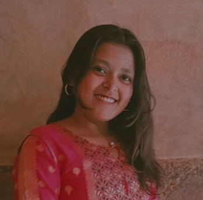

Resume
Chanchal

About Me
My name is Chanchal. Born and brought up in Delhi itself.I’m a hard-working, passionate person who believes in the importance of education and accessibility to technological advancements. I am friendly, helpful and polite, have a good sense of humour.
Education
High School
Completed schooing from ' SHANTI GYAN NIETAN SR. SEC. PUBLIC SCHOOLCollege/ University
Pursuing "B Sc(hons.) Computer Science " from 'BHASKARACHARYA COLLEGE OF APPLIED SCIENCES , DELHI UNIVERSITY'Certificate Courses/ Diploma
Web Development
A complete web development bootcamp offered by UDEMY , a certified and trusted educational academy wordwideEthical Hacking and Cybercrime Investigation Workshop
A workshop offered by SLYTHERIN EDUTECH PRIVATE LIMITED on the basics of cybers security and ethical hacking for begginers in the same field.
Skills
Soft Skills
- hard-working
- Works well under supervisionm and with others
- Highly professional and committed
- Pay attention to minute details
- Effective Communication and interpresonal skills
- Problem solving and critical thinking
- Adaptibility
- Emotional intelligence
- Productivity and organization
Hard Skills
- C++
- Python
- HTML
- CSS
- javascript
- MySQL
- Web Development
- Photography
- Finearts- sketching
- Data Analysis
- data Visualization
- MS Excel
- Powerpoint
Awards and Certificates
- Certificate of completion of Ethical Hacking and Cybercrime Investigation workshop (August 2023).
Others
Contact Me
Know Me and My Hobbies